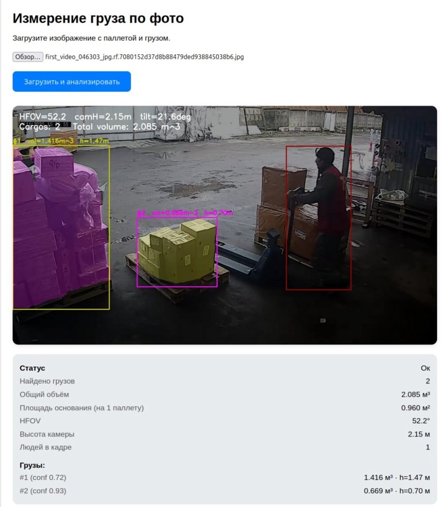

Автоматизированная информационная система для транспортной компании
АИС «Транспорт» — это программное решение для автоматического определения объёма груза на складе с помощью компьютерного зрения. Система разработана студентами Московского Политеха в рамках дисциплины «Проектная деятельность» по заказу ООО «ЖелДорЭкспедиция» — транспортного оператора сборных грузов в России.
Продукт использует нейросеть YOLOv8 для детекции объектов в реальном времени, что позволяет за 10 секунд определить габариты и объём груза с точностью более 95%. Готовое решение упаковано в Docker-образ и может быть развёрнуто на сервере заказчика одной командой. Система интегрируется с существующими WMS/TMS-платформами через API на FastAPI.
Что не так с текущим процессом оценки объёма груза
Ручное измерение одного груза занимает около 3 минут. Операторы тратят до 50% рабочего времени на рутину.
Замеры рулеткой дают расхождения в 10–20%, что приводит к штрафам и рекламациям.
Из-за неточного учёта кубатуры возникает до 15% недозагрузки фур.
Что изменится после внедрения АИС
Загрузка фото и отображение результатов расчёта

Пример работы веб-интерфейса: загрузка кадра, детекция груза, отображение объёма и статуса.
Современные инструменты разработки
Основной язык разработки алгоритмов и API.
Нейросеть для детекции объектов на изображениях.
Фреймворк для создания REST API.
Библиотека для обработки изображений.
Контейнеризация для быстрого развёртывания.
Веб-интерфейс и статический сайт проекта.
Финансовые показатели проекта
| Показатель | Значение |
|---|---|
| Чистый эффект на 1 груз | 21 ₽ |
| Маржинальность | 80,8% |
| Окупаемость | < 3 месяцев |
| Годовая прибыль | > 3,8 млн ₽ |
| Срок внедрения | 2–4 недели |
| Затраты / груз | ~5 ₽ |